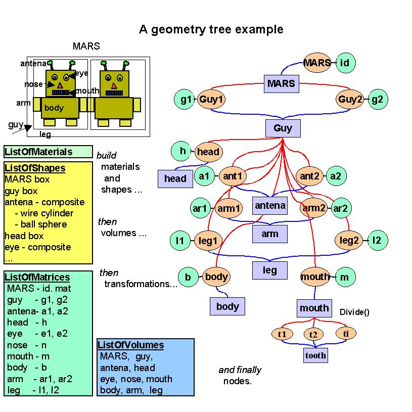
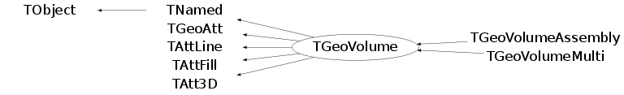

class TGeoVolume: public TNamed, public TGeoAtt, public TAttLine, public TAttFill, public TAtt3D
TGeoVolume - the base class representing solids. Volumes are the basic objects used in building the geometrical hierarchy. They represent unpositioned objects but store all information about the placement of the other volumes they may contain. Therefore a volume can be replicated several times in the geometry. In order to create a volume, one has to put togeather a shape and a medium which are already defined. Volumes have to be named by users at creation time. Every different name may represent a an unique volume object, but may also represent more general a family (class) of volume objects having the same shape type and medium, but possibly different shape parameters. It is the user's task to provide different names for different volume families in order to avoid ambiguities at tracking time. A generic family rather than a single volume is created only in two cases : when a generic shape is provided to the volume constructor or when a division operation is applied. Each volume in the geometry stores an unique ID corresponding to its family. In order to ease-up their creation, the manager class is providing an API that allows making a shape and a volume in a single step. Volumes are objects that can be visualized, therefore having visibility, colour, line and fill attributes that can be defined or modified any time after the volume creation. It is advisable however to define these properties just after the first creation of a volume namespace, since in case of volume families any new member created by the modeler inherits these properties. In order to provide navigation features, volumes have to be able to find the proper container of any point defined in the local reference frame. This can be the volume itself, one of its positioned daughter volumes or none if the point is actually outside. On the other hand, volumes have to provide also other navigation methods such as finding the distances to its shape boundaries or which daughter will be crossed first. The implementation of these features is done at shape level, but the local mother-daughters management is handled by volumes that builds additional optimisation structures upon geometry closure. In order to have navigation features properly working one has to follow the general rules for building a valid geometry (see TGeoManager class). Now let's make a simple volume representing a copper wire. We suppose that a medium is already created (see TGeoMedium class on how to create media). We will create a TUBE shape for our wire, having Rmin=0cm, Rmax=0.01cm and a half-length dZ=1cm : TGeoTube *tube = new TGeoTube("wire_tube", 0, 0.01, 1); One may ommit the name for the shape if no retreiving by name is further needed during geometry building. The same shape can be shared by different volumes having different names and materials. Now let's make the volume for our wire. The prototype for volumes constructor looks like : TGeoVolume::TGeoVolume(const char *name, TGeoShape *shape, TGeoMedium *med) Since TGeoTube derives brom the base shape class, we can provide it to the volume constructor : TGeoVolume *wire_co = new TGeoVolume("WIRE_CO", tube, ptrCOPPER); Do not bother to delete neither the media, shapes or volumes that you have created since all will be automatically cleaned on exit by the manager class. If we would have taken a look inside TGeoManager::MakeTube() method, we would have been able to create our wire with a single line : TGeoVolume *wire_co = gGeoManager->MakeTube("WIRE_CO", ptrCOPPER, 0, 0.01, 1); The same applies for all primitive shapes, for which there can be found corresponding MakeSHAPE() methods. Their usage is much more convenient unless a shape has to be shared between more volumes. Let's make now an aluminium wire having the same shape, supposing that we have created the copper wire with the line above : TGeoVolume *wire_al = new TGeoVolume("WIRE_AL", wire_co->GetShape(), ptrAL); Now that we have learned how to create elementary volumes, let's see how we can create a geometrical hierarchy. Positioning volumes When creating a volume one does not specify if this will contain or not other volumes. Adding daughters to a volume implies creating those and adding them one by one to the list of daughters. Since the volume has to know the position of all its daughters, we will have to supply at the same time a geometrical transformation with respect to its local reference frame for each of them. The objects referencing a volume and a transformation are called NODES and their creation is fully handled by the modeler. They represent the link elements in the hierarchy of volumes. Nodes are unique and distinct geometrical objects ONLY from their container point of view. Since volumes can be replicated in the geometry, the same node may be found on different branches./*  */
An important observation is that volume objects are owned by the TGeoManager class. This stores a list of all volumes in the geometry, that is cleaned upon destruction. Let's consider positioning now our wire in the middle of a gas chamber. We need first to define the gas chamber : TGeoVolume *chamber = gGeoManager->MakeTube("CHAMBER", ptrGAS, 0, 1, 1); Now we can put the wire inside : chamber->AddNode(wire_co, 1); If we inspect now the chamber volume in a browser, we will notice that it has one daughter. Of course the gas has some container also, but let's keep it like that for the sake of simplicity. The full prototype of AddNode() is : TGeoVolume::AddNode(TGeoVolume *daughter, Int_t usernumber, TGeoMatrix *matrix=gGeoIdentity) Since we did not supplied the third argument, the wire will be positioned with an identity transformation inside the chamber. One will notice that the inner radii of the wire and chamber are both zero - therefore, aren't the two volumes overlapping ? The answer is no, the modeler is even relaying on the fact that any daughter is fully contained by its mother. On the other hand, neither of the nodes positioned inside a volume should overlap with each other. We will see that there are allowed some exceptions to those rules. Overlapping volumes Positioning volumes that does not overlap their neighbours nor extrude their container is sometimes quite strong contrain. Some parts of the geometry might overlap naturally, e.g. two crossing tubes. The modeller supports such cases only if the overlapping nodes are declared by the user. In order to do that, one should use TGeoVolume::AddNodeOverlap() instead of TGeoVolume::AddNode(). When 2 or more positioned volumes are overlapping, not all of them have to be declared so, but at least one. A point inside an overlapping region equally belongs to all overlapping nodes, but the way these are defined can enforce the modeler to give priorities. The general rule is that the deepest node in the hierarchy containing a point have the highest priority. For the same geometry level, non-overlapping is prioritized over overlapping. In order to illustrate this, we will consider few examples. We will designate non-overlapping nodes as ONLY and the others MANY as in GEANT3, where this concept was introduced: 1. The part of a MANY node B extruding its container A will never be "seen" during navigation, as if B was in fact the result of the intersection of A and B. 2. If we have two nodes A (ONLY) and B (MANY) inside the same container, all points in the overlapping region of A and B will be designated as belonging to A. 3. If A an B in the above case were both MANY, points in the overlapping part will be designated to the one defined first. Both nodes must have the same medium. 4. The silces of a divided MANY will be as well MANY. One needs to know that navigation inside geometry parts MANY nodes is much slower. Any overlapping part can be defined based on composite shapes - this is always recommended.
Function Members (Methods)
public:
| TGeoVolume() | |
| TGeoVolume(const char* name, const TGeoShape* shape, const TGeoMedium* med = 0) | |
| virtual | ~TGeoVolume() |
| void | TObject::AbstractMethod(const char* method) const |
| virtual void | AddNode(const TGeoVolume* vol, Int_t copy_no, TGeoMatrix* mat = 0, Option_t* option = "") |
| void | AddNodeOffset(const TGeoVolume* vol, Int_t copy_no, Double_t offset = 0, Option_t* option = "") |
| virtual void | AddNodeOverlap(const TGeoVolume* vol, Int_t copy_no, TGeoMatrix* mat = 0, Option_t* option = "") |
| virtual void | TObject::AppendPad(Option_t* option = "") |
| virtual void | Browse(TBrowser* b) |
| Double_t | Capacity() const |
| virtual void | cd(Int_t inode) const |
| void | CheckGeometry(Int_t nrays = 1, Double_t startx = 0, Double_t starty = 0, Double_t startz = 0) const |
| void | CheckOverlaps(Double_t ovlp = 0.1, Option_t* option = "") constMENU |
| void | CheckShape(Int_t testNo, Int_t nsamples = 10000, Option_t* option = "")MENU |
| void | CheckShapes() |
| static TClass* | Class() |
| virtual const char* | TObject::ClassName() const |
| void | CleanAll() |
| virtual void | TNamed::Clear(Option_t* option = "") |
| void | ClearNodes() |
| void | ClearShape() |
| virtual void | ClearThreadData() const |
| virtual TObject* | TNamed::Clone(const char* newname = "") const |
| void | CloneNodesAndConnect(TGeoVolume* newmother) const |
| virtual TGeoVolume* | CloneVolume() const |
| virtual Int_t | TNamed::Compare(const TObject* obj) const |
| Bool_t | Contains(Double_t* point) const |
| virtual void | TNamed::Copy(TObject& named) const |
| Int_t | CountNodes(Int_t nlevels = 1000, Int_t option = 0) |
| virtual void | TObject::Delete(Option_t* option = "")MENU |
| Int_t | TAttLine::DistancetoLine(Int_t px, Int_t py, Double_t xp1, Double_t yp1, Double_t xp2, Double_t yp2) |
| virtual Int_t | DistancetoPrimitive(Int_t px, Int_t py) |
| virtual TGeoVolume* | Divide(const char* divname, Int_t iaxis, Int_t ndiv, Double_t start, Double_t step, Int_t numed = 0, Option_t* option = "") |
| virtual void | Draw(Option_t* option = "")MENU |
| virtual void | TObject::DrawClass() constMENU |
| virtual TObject* | TObject::DrawClone(Option_t* option = "") constMENU |
| virtual void | DrawOnly(Option_t* option = "")MENU |
| virtual void | TObject::Dump() constMENU |
| virtual void | TObject::Error(const char* method, const char* msgfmt) const |
| virtual void | TObject::Execute(const char* method, const char* params, Int_t* error = 0) |
| virtual void | TObject::Execute(TMethod* method, TObjArray* params, Int_t* error = 0) |
| virtual void | ExecuteEvent(Int_t event, Int_t px, Int_t py) |
| Int_t | Export(const char* filename, const char* name = "", Option_t* option = "") |
| virtual void | TObject::Fatal(const char* method, const char* msgfmt) const |
| virtual void | TNamed::FillBuffer(char*& buffer) |
| Bool_t | FindMatrixOfDaughterVolume(TGeoVolume* vol) const |
| TGeoNode* | FindNode(const char* name) const |
| virtual TObject* | TObject::FindObject(const char* name) const |
| virtual TObject* | TObject::FindObject(const TObject* obj) const |
| void | FindOverlaps() const |
| virtual Int_t | GetByteCount() const |
| virtual Int_t | GetCurrentNodeIndex() const |
| virtual Option_t* | TObject::GetDrawOption() const |
| static Long_t | TObject::GetDtorOnly() |
| TObject* | GetField() const |
| virtual Color_t | TAttFill::GetFillColor() const |
| virtual Style_t | TAttFill::GetFillStyle() const |
| TGeoPatternFinder* | GetFinder() const |
| TGeoManager* | GetGeoManager() const |
| virtual const char* | GetIconName() const |
| Int_t | GetIndex(const TGeoNode* node) const |
| virtual Color_t | TAttLine::GetLineColor() const |
| virtual Style_t | TAttLine::GetLineStyle() const |
| virtual Width_t | TAttLine::GetLineWidth() const |
| TGeoMaterial* | GetMaterial() const |
| TGeoMedium* | GetMedium() const |
| virtual const char* | TNamed::GetName() const |
| Int_t | GetNdaughters() const |
| virtual Int_t | GetNextNodeIndex() const |
| TGeoNode* | GetNode(const char* name) const |
| TGeoNode* | GetNode(Int_t i) const |
| Int_t | GetNodeIndex(const TGeoNode* node, Int_t* check_list, Int_t ncheck) const |
| TObjArray* | GetNodes() |
| Int_t | GetNtotal() const |
| Int_t | GetNumber() const |
| virtual char* | GetObjectInfo(Int_t px, Int_t py) const |
| static Bool_t | TObject::GetObjectStat() |
| Bool_t | GetOptimalVoxels() const |
| virtual Option_t* | GetOption() const |
| char* | GetPointerName() const |
| TGeoShape* | GetShape() const |
| virtual const char* | TNamed::GetTitle() const |
| Char_t | GetTransparency() const |
| virtual UInt_t | TObject::GetUniqueID() const |
| TGeoVoxelFinder* | GetVoxels() const |
| void | GrabFocus()MENU |
| void | Gsord(Int_t) |
| virtual Bool_t | TObject::HandleTimer(TTimer* timer) |
| virtual ULong_t | TNamed::Hash() const |
| static TGeoVolume* | Import(const char* filename, const char* name = "", Option_t* option = "") |
| virtual void | TObject::Info(const char* method, const char* msgfmt) const |
| virtual Bool_t | TObject::InheritsFrom(const char* classname) const |
| virtual Bool_t | TObject::InheritsFrom(const TClass* cl) const |
| virtual void | TObject::Inspect() constMENU |
| void | InspectMaterial() constMENU |
| void | InspectShape() constMENU |
| void | TObject::InvertBit(UInt_t f) |
| void | InvisibleAll(Bool_t flag = kTRUE)TOGGLE GETTER |
| virtual TClass* | IsA() const |
| Bool_t | IsActive() const |
| Bool_t | IsActiveDaughters() const |
| Bool_t | IsAdded() const |
| Bool_t | IsAllInvisible() const |
| virtual Bool_t | IsAssembly() const |
| Bool_t | IsCylVoxels() const |
| virtual Bool_t | TObject::IsEqual(const TObject* obj) const |
| virtual Bool_t | IsFolder() const |
| Bool_t | TObject::IsOnHeap() const |
| Bool_t | IsRaytracing() const |
| Bool_t | IsReplicated() const |
| Bool_t | IsRunTime() const |
| Bool_t | IsSelected() const |
| virtual Bool_t | TNamed::IsSortable() const |
| Bool_t | IsStyleDefault() const |
| Bool_t | IsTopVolume() const |
| virtual Bool_t | TAttFill::IsTransparent() const |
| Bool_t | IsValid() const |
| Bool_t | TGeoAtt::IsVisBranch() const |
| Bool_t | IsVisContainers() const |
| Bool_t | TGeoAtt::IsVisDaughters() const |
| virtual Bool_t | IsVisible() const |
| Bool_t | IsVisibleDaughters() const |
| Bool_t | IsVisLeaves() const |
| Bool_t | IsVisOnly() const |
| Bool_t | TGeoAtt::IsVisRaytrace() const |
| Bool_t | TGeoAtt::IsVisStreamed() const |
| Bool_t | TGeoAtt::IsVisTouched() const |
| virtual Bool_t | IsVolumeMulti() const |
| Bool_t | IsXYZVoxels() const |
| Bool_t | TObject::IsZombie() const |
| TH2F* | LegoPlot(Int_t ntheta = 20, Double_t themin = 0., Double_t themax = 180., Int_t nphi = 60, Double_t phimin = 0., Double_t phimax = 360., Double_t rmin = 0., Double_t rmax = 9999999, Option_t* option = "")MENU |
| virtual void | TNamed::ls(Option_t* option = "") const |
| void | MakeCopyNodes(const TGeoVolume* other) |
| virtual TGeoVolume* | MakeCopyVolume(TGeoShape* newshape) |
| TGeoVolume* | MakeReflectedVolume(const char* newname = "") const |
| void | TObject::MayNotUse(const char* method) const |
| virtual void | TAttLine::Modify() |
| virtual Bool_t | TObject::Notify() |
| void | TObject::Obsolete(const char* method, const char* asOfVers, const char* removedFromVers) const |
| static void | TObject::operator delete(void* ptr) |
| static void | TObject::operator delete(void* ptr, void* vp) |
| static void | TObject::operator delete[](void* ptr) |
| static void | TObject::operator delete[](void* ptr, void* vp) |
| void* | TObject::operator new(size_t sz) |
| void* | TObject::operator new(size_t sz, void* vp) |
| void* | TObject::operator new[](size_t sz) |
| void* | TObject::operator new[](size_t sz, void* vp) |
| Bool_t | OptimizeVoxels()MENU |
| virtual void | Paint(Option_t* option = "") |
| virtual void | TObject::Pop() |
| virtual void | TNamed::Print(Option_t* option = "") const |
| void | PrintNodes() const |
| void | PrintVoxels() constMENU |
| void | RandomPoints(Int_t npoints = 1000000, Option_t* option = "")MENU |
| void | RandomRays(Int_t nrays = 10000, Double_t startx = 0, Double_t starty = 0, Double_t startz = 0)MENU |
| void | Raytrace(Bool_t flag = kTRUE)TOGGLE GETTER |
| virtual Int_t | TObject::Read(const char* name) |
| virtual void | TObject::RecursiveRemove(TObject* obj) |
| void | RegisterYourself(Option_t* option = "") |
| void | RemoveNode(TGeoNode* node) |
| TGeoNode* | ReplaceNode(TGeoNode* nodeorig, TGeoShape* newshape = 0, TGeoMatrix* newpos = 0, TGeoMedium* newmed = 0) |
| void | ReplayCreation(const TGeoVolume* other) |
| void | TGeoAtt::ResetAttBit(UInt_t f) |
| virtual void | TAttFill::ResetAttFill(Option_t* option = "") |
| virtual void | TAttLine::ResetAttLine(Option_t* option = "") |
| void | TObject::ResetBit(UInt_t f) |
| virtual void | SaveAs(const char* filename, Option_t* option = "") constMENU |
| virtual void | TAttFill::SaveFillAttributes(ostream& out, const char* name, Int_t coldef = 1, Int_t stydef = 1001) |
| virtual void | TAttLine::SaveLineAttributes(ostream& out, const char* name, Int_t coldef = 1, Int_t stydef = 1, Int_t widdef = 1) |
| virtual void | SavePrimitive(ostream& out, Option_t* option = "") |
| void | SelectVolume(Bool_t clear = kFALSE) |
| void | SetActiveDaughters(Bool_t flag = kTRUE) |
| void | SetActivity(Bool_t flag = kTRUE) |
| void | SetAdded() |
| void | SetAsTopVolume()TOGGLE GETTER |
| void | TGeoAtt::SetAttBit(UInt_t f) |
| void | TGeoAtt::SetAttBit(UInt_t f, Bool_t set) |
| void | SetAttVisibility(Bool_t vis) |
| void | TObject::SetBit(UInt_t f) |
| void | TObject::SetBit(UInt_t f, Bool_t set) |
| void | SetCurrentPoint(Double_t x, Double_t y, Double_t z) |
| void | SetCylVoxels(Bool_t flag = kTRUE) |
| virtual void | TObject::SetDrawOption(Option_t* option = "")MENU |
| static void | TObject::SetDtorOnly(void* obj) |
| void | SetField(TObject* field) |
| virtual void | TAttFill::SetFillAttributes()MENU |
| virtual void | TAttFill::SetFillColor(Color_t fcolor) |
| virtual void | TAttFill::SetFillStyle(Style_t fstyle) |
| void | SetFinder(TGeoPatternFinder* finder) |
| void | SetInvisible() |
| virtual void | TAttLine::SetLineAttributes()MENU |
| virtual void | SetLineColor(Color_t lcolor) |
| virtual void | SetLineStyle(Style_t lstyle) |
| virtual void | SetLineWidth(Width_t lwidth) |
| virtual void | SetMedium(TGeoMedium* medium) |
| virtual void | TNamed::SetName(const char* name)MENU |
| virtual void | TNamed::SetNameTitle(const char* name, const char* title) |
| void | SetNodes(TObjArray* nodes) |
| void | SetNtotal(Int_t ntotal) |
| void | SetNumber(Int_t number) |
| static void | TObject::SetObjectStat(Bool_t stat) |
| void | TGeoAtt::SetOptimization(Option_t* option) |
| void | SetOption(const char* option) |
| void | SetReplicated() |
| void | SetShape(const TGeoShape* shape) |
| virtual void | TNamed::SetTitle(const char* title = "")MENU |
| void | SetTransparency(Char_t transparency = 0)MENU |
| virtual void | TObject::SetUniqueID(UInt_t uid) |
| void | TGeoAtt::SetVisBranch() |
| virtual void | SetVisContainers(Bool_t flag = kTRUE)TOGGLE GETTER |
| void | TGeoAtt::SetVisDaughters(Bool_t vis = kTRUE) |
| virtual void | SetVisibility(Bool_t vis = kTRUE)TOGGLE GETTER |
| virtual void | SetVisLeaves(Bool_t flag = kTRUE)TOGGLE GETTER |
| virtual void | SetVisOnly(Bool_t flag = kTRUE)TOGGLE GETTER |
| void | TGeoAtt::SetVisRaytrace(Bool_t flag = kTRUE) |
| void | TGeoAtt::SetVisStreamed(Bool_t vis = kTRUE) |
| void | TGeoAtt::SetVisTouched(Bool_t vis = kTRUE) |
| void | SetVoxelFinder(TGeoVoxelFinder* finder) |
| virtual void | ShowMembers(TMemberInspector& insp) |
| virtual Int_t | TNamed::Sizeof() const |
| virtual void | TAtt3D::Sizeof3D() const |
| void | SortNodes() |
| virtual void | Streamer(TBuffer& b) |
| void | StreamerNVirtual(TBuffer& b) |
| virtual void | TObject::SysError(const char* method, const char* msgfmt) const |
| Bool_t | TGeoAtt::TestAttBit(UInt_t f) const |
| Bool_t | TObject::TestBit(UInt_t f) const |
| Int_t | TObject::TestBits(UInt_t f) const |
| void | UnmarkSaved() |
| virtual void | TObject::UseCurrentStyle() |
| Bool_t | Valid() const |
| void | VisibleDaughters(Bool_t vis = kTRUE)TOGGLE GETTER |
| void | Voxelize(Option_t* option) |
| virtual void | TObject::Warning(const char* method, const char* msgfmt) const |
| Double_t | Weight(Double_t precision = 0.01, Option_t* option = "va")MENU |
| Double_t | WeightA() const |
| virtual Int_t | TObject::Write(const char* name = 0, Int_t option = 0, Int_t bufsize = 0) |
| virtual Int_t | TObject::Write(const char* name = 0, Int_t option = 0, Int_t bufsize = 0) const |
protected:
| TGeoVolume(const TGeoVolume&) | |
| virtual void | TObject::DoError(int level, const char* location, const char* fmt, va_list va) const |
| void | TObject::MakeZombie() |
| TGeoVolume& | operator=(const TGeoVolume&) |
Data Members
public:
| enum EGeoVolumeTypes { | kVolumeReplicated | |
| kVolumeSelected | ||
| kVolumeDiv | ||
| kVolumeOverlap | ||
| kVolumeImportNodes | ||
| kVolumeMulti | ||
| kVoxelsXYZ | ||
| kVoxelsCyl | ||
| kVolumeClone | ||
| kVolumeAdded | ||
| }; | ||
| enum TObject::EStatusBits { | kCanDelete | |
| kMustCleanup | ||
| kObjInCanvas | ||
| kIsReferenced | ||
| kHasUUID | ||
| kCannotPick | ||
| kNoContextMenu | ||
| kInvalidObject | ||
| }; | ||
| enum TObject::[unnamed] { | kIsOnHeap | |
| kNotDeleted | ||
| kZombie | ||
| kBitMask | ||
| kSingleKey | ||
| kOverwrite | ||
| kWriteDelete | ||
| }; | ||
| enum TGeoAtt::[unnamed] { | kBitMask | |
| }; | ||
| enum TGeoAtt::EGeoVisibilityAtt { | kVisOverride | |
| kVisNone | ||
| kVisThis | ||
| kVisDaughters | ||
| kVisOneLevel | ||
| kVisStreamed | ||
| kVisTouched | ||
| kVisOnScreen | ||
| kVisContainers | ||
| kVisOnly | ||
| kVisBranch | ||
| kVisRaytrace | ||
| }; | ||
| enum TGeoAtt::EGeoActivityAtt { | kActOverride | |
| kActNone | ||
| kActThis | ||
| kActDaughters | ||
| }; | ||
| enum TGeoAtt::EGeoOptimizationAtt { | kUseBoundingBox | |
| kUseVoxels | ||
| kUseGsord | ||
| }; | ||
| enum TGeoAtt::EGeoSavePrimitiveAtt { | kSavePrimitiveAtt | |
| kSaveNodesAtt | ||
| }; |
protected:
| TObject* | fField | ! just a hook for now |
| Color_t | TAttFill::fFillColor | fill area color |
| Style_t | TAttFill::fFillStyle | fill area style |
| TGeoPatternFinder* | fFinder | finder object for divisions |
| UInt_t | TGeoAtt::fGeoAtt | option flags |
| TGeoManager* | fGeoManager | ! pointer to TGeoManager owning this volume |
| Color_t | TAttLine::fLineColor | line color |
| Style_t | TAttLine::fLineStyle | line style |
| Width_t | TAttLine::fLineWidth | line width |
| TGeoMedium* | fMedium | tracking medium |
| TString | TNamed::fName | object identifier |
| TObjArray* | fNodes | array of nodes inside this volume |
| Int_t | fNtotal | total number of physical nodes |
| Int_t | fNumber | volume serial number in the list of volumes |
| TString | fOption | ! option - if any |
| TGeoShape* | fShape | shape |
| TString | TNamed::fTitle | object title |
| TGeoVoxelFinder* | fVoxels | finder object for bounding boxes |
Class Charts
{kind=link}
{kind=link}
{kind=link}
{kind=link}

Function documentation
void ClearThreadData() const
Double_t Capacity() const
Computes the capacity of this [cm^3] as the capacity of its shape. In case of assemblies, the capacity is computed as the sum of daughter's capacities.
void CheckGeometry(Int_t nrays = 1, Double_t startx = 0, Double_t starty = 0, Double_t startz = 0) const
Shoot nrays with random directions from starting point (startx, starty, startz) in the reference frame of this volume. Track each ray until exiting geometry, then shoot backwards from exiting point and compare boundary crossing points.
void CheckOverlaps(Double_t ovlp = 0.1, Option_t* option = "") const
Overlap checking tool. Check for illegal overlaps within a limit OVLP. Use option="s[number]" to force overlap checking by sampling volume with [number] points. Ex: myVol->CheckOverlaps(0.01, "s10000000"); // shoot 10000000 points myVol->CheckOverlaps(0.01, "s"); // shoot the default value of 1e6 points
void CheckShape(Int_t testNo, Int_t nsamples = 10000, Option_t* option = "")
Tests for checking the shape navigation algorithms. See TGeoShape::CheckShape()
void CheckShapes()
check for negative parameters in shapes. THIS METHOD LEAVES SOME GARBAGE NODES -> memory leak, to be fixed printf("---Checking daughters of volume %s\n", GetName());
Int_t CountNodes(Int_t nlevels = 1000, Int_t option = 0)
Count total number of subnodes starting from this volume, nlevels down option = 0 (default) - count only once per volume option = 1 - count every time option = 2 - count volumes on visible branches option = 3 - return maximum level counted already with option = 0
Bool_t IsRaytracing() const
Check if the painter is currently ray-tracing the content of this volume.
TGeoVolume * Import(const char* filename, const char* name = "", Option_t* option = "")
Import a volume from a file.
Int_t Export(const char* filename, const char* name = "", Option_t* option = "")
Export this volume to a file. -Case 1: root file or root/xml file if filename end with ".root". The key will be named name if filename end with ".xml" a root/xml file is produced. -Case 2: C++ script if filename end with ".C" -Case 3: gdml file if filename end with ".gdml" NOTE that to use this option, the PYTHONPATH must be defined like export PYTHONPATH=$ROOTSYS/lib:$ROOTSYS/gdml
void AddNode(const TGeoVolume* vol, Int_t copy_no, TGeoMatrix* mat = 0, Option_t* option = "")
Add a TGeoNode to the list of nodes. This is the usual method for adding daughters inside the container volume.
void AddNodeOffset(const TGeoVolume* vol, Int_t copy_no, Double_t offset = 0, Option_t* option = "")
Add a division node to the list of nodes. The method is called by TGeoVolume::Divide() for creating the division nodes.
void AddNodeOverlap(const TGeoVolume* vol, Int_t copy_no, TGeoMatrix* mat = 0, Option_t* option = "")
Add a TGeoNode to the list of nodes. This is the usual method for adding daughters inside the container volume.
TGeoVolume * Divide(const char* divname, Int_t iaxis, Int_t ndiv, Double_t start, Double_t step, Int_t numed = 0, Option_t* option = "")
Division a la G3. The volume will be divided along IAXIS (see shape classes), in NDIV
slices, from START with given STEP. The division volumes will have medium number NUMED.
If NUMED=0 they will get the medium number of the divided volume (this). If NDIV<=0,
all range of IAXIS will be divided and the resulting number of divisions will be centered on
IAXIS. If STEP<=0, the real STEP will be computed as the full range of IAXIS divided by NDIV.
Options (case insensitive):
N - divide all range in NDIV cells (same effect as STEP<=0) (GSDVN in G3)
NX - divide range starting with START in NDIV cells (GSDVN2 in G3)
S - divide all range with given STEP. NDIV is computed and divisions will be centered
in full range (same effect as NDIV<=0) (GSDVS, GSDVT in G3)
SX - same as DVS, but from START position. (GSDVS2, GSDVT2 in G3)
Int_t DistancetoPrimitive(Int_t px, Int_t py)
compute the closest distance of approach from point px,py to this volume
Bool_t OptimizeVoxels()
Perform an exensive sampling to find which type of voxelization is most efficient.
void ReplayCreation(const TGeoVolume* other)
Recreate the content of the other volume without pointer copying. Voxels are ignored and supposed to be created in a later step via Voxelize.
TH2F * LegoPlot(Int_t ntheta = 20, Double_t themin = 0., Double_t themax = 180., Int_t nphi = 60, Double_t phimin = 0., Double_t phimax = 360., Double_t rmin = 0., Double_t rmax = 9999999, Option_t* option = "")
Generate a lego plot fot the top volume, according to option.
void RegisterYourself(Option_t* option = "")
Register the volume and all materials/media/matrices/shapes to the manager.
void RandomPoints(Int_t npoints = 1000000, Option_t* option = "")
Draw random points in the bounding box of this volume.
void RandomRays(Int_t nrays = 10000, Double_t startx = 0, Double_t starty = 0, Double_t startz = 0)
Random raytracing method.
void Raytrace(Bool_t flag = kTRUE)
Draw this volume with current settings and perform raytracing in the pad.
void SaveAs(const char* filename, Option_t* option = "") const
Save geometry having this as top volume as a C++ macro.
void SavePrimitive(ostream& out, Option_t* option = "")
Save a primitive as a C++ statement(s) on output stream "out".
Int_t GetNodeIndex(const TGeoNode* node, Int_t* check_list, Int_t ncheck) const
Get the index of a daugther within check_list by providing the node pointer.
void MakeCopyNodes(const TGeoVolume* other)
make a new list of nodes and copy all nodes of other volume inside
TGeoVolume * MakeCopyVolume(TGeoShape* newshape)
make a copy of this volume build a volume with same name, shape and medium
TGeoVolume * MakeReflectedVolume(const char* newname = "") const
Make a copy of this volume which is reflected with respect to XY plane.
void SortNodes()
sort nodes by decreasing volume of the bounding box. ONLY nodes comes first, then overlapping nodes and finally division nodes.
TGeoNode * ReplaceNode(TGeoNode* nodeorig, TGeoShape* newshape = 0, TGeoMatrix* newpos = 0, TGeoMedium* newmed = 0)
Replace an existing daughter with a new volume having the same name but possibly a new shape, position or medium. Not allowed for positioned assemblies. For division cells, the new shape/matrix are ignored.
void SelectVolume(Bool_t clear = kFALSE)
Select this volume as matching an arbitrary criteria. The volume is added to a static list and the flag TGeoVolume::kVolumeSelected is set. All flags need to be reset at the end by calling the method with CLEAR=true. This will also clear the list.
Bool_t FindMatrixOfDaughterVolume(TGeoVolume* vol) const
Find a daughter node having VOL as volume and fill TGeoManager::fHMatrix with its global matrix.
Double_t Weight(Double_t precision = 0.01, Option_t* option = "va")
Estimate the weight of a volume (in kg) with SIGMA(M)/M better than PRECISION. Option can contain : v - verbose, a - analytical (default)
void SetCylVoxels(Bool_t flag = kTRUE)
{TObject::SetBit(kVoxelsCyl, flag); TObject::SetBit(kVoxelsXYZ, !flag);}void SetTransparency(Char_t transparency = 0)
{if (fMedium) fMedium->GetMaterial()->SetTransparency(transparency);}